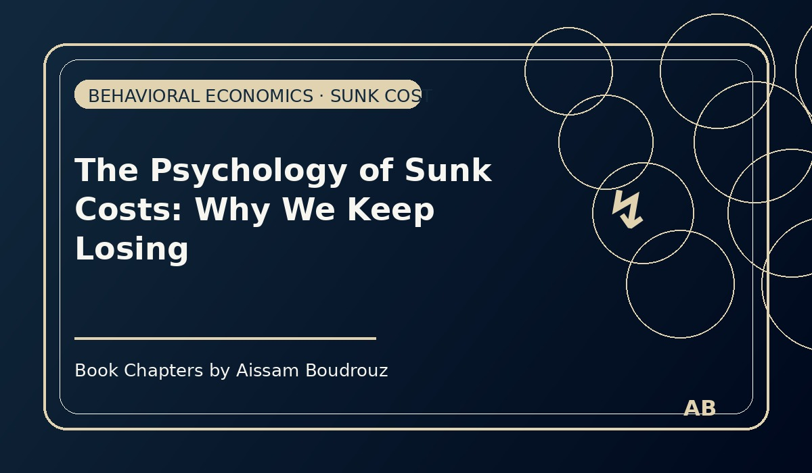

The Psychology of Sunk Costs: Why We Keep Losing
We’ve all been there: a long, tiring argument or a project that eats hours and money.
At some point you realize you were wrong. But instead of saying so, you keep going — deeper and deeper — defending the choice that’s already failed.
Call it stubbornness, pride, or shame. Call it whatever you like.
From an economist’s point of view, it’s an everyday human mistake with a name: the sunk-cost fallacy.
Page 1 — When cost becomes a weight
Sunk costs are the things you already spent and cannot recover — time, money, effort, pride.
The rational rule is simple: future decisions should be made by comparing future costs and benefits. Anything already spent is irrelevant.
But humans are not purely rational machines. We feel loss. We hate admitting waste.
That feeling twists decisions. Instead of cutting losses, we double down — and sometimes keep pouring until there’s nothing left but regret.
Businesses do it. Startups do it. Governments do it. People do it.
Page 2 — A classic experiment: the ticket to a ruined trip
Three decades of behavioral studies show how common this is. Arkes and Blumer ran a neat one that’s easy to remember (and painful to watch yourself in).
Imagine you bought a $100 ticket for a trip to a mountain town. At the last minute the weather turns terrible — freezing rain, closed trails. You now have two options:
Spend the $100 and go anyway (miserable), or
Accept the $100 loss and go on a nearby holiday with friends for $50 (fun).
Rationally, the right decision is obvious: the $100 is gone — choose the option that gives more future enjoyment (the $50 trip with friends). But the experiments found many people prefer to go to the ruined destination — just to “make the ticket count.”
In one version, 33 people chose to go to the ruined town while only 28 chose the better alternative. In other experiments the gap was far larger — sometimes 80% choose the sunk-cost path.
Page 3 — Companies and the slow bleed
The same psychology explains corporate disasters: firms continue funding a failing project because they’ve already invested heavily. Boards will approve “just one more round” of funding. Managers will keep hiring. The small loss to admit failure seems bigger than the future, rational savings.
We call it escalation of commitment. The result is the same in households and in corporations: resources wasted, talent misused, opportunities lost.
Page 4 — How to avoid the trap (practical steps)
Good news: awareness helps. Here are simple ways to fight sunk-cost thinking — small habits that actually work:
Ask only future questions.
When deciding, ask: “Given what I know now, what will be better from now on?” Ignore past losses.
Set pre-planned exit rules.
Before starting a project, decide the objective and the cutoff (time, cost, metrics). If the rule is broken, stop.
Use an external reviewer.
A fresh pair of eyes (colleague, friend, advisor) is less likely to be emotionally attached and can recommend stopping.
Frame losses honestly.
Name the sunk cost out loud: “We spent X and cannot get it back.” Saying it reduces the psychological pull.
Measure opportunity cost.
Ask: “What else could we do with the time/money?” Comparing to alternatives makes continuing look less attractive.
Page 5 — A small, honest ending
We don’t behave like pure calculators — and that’s okay. The sunk-cost fallacy is a human thing: we value consistency, we fear shame, we hate waste. But those feelings can be guided.
Next time you feel the urge to keep going just because you already spent something — pause. Take the outside view. Ask the one question that matters: What decision will give me the best future, not the best past?
Economics doesn’t just teach numbers. Sometimes it teaches the courage to stop.
← Back to Articles